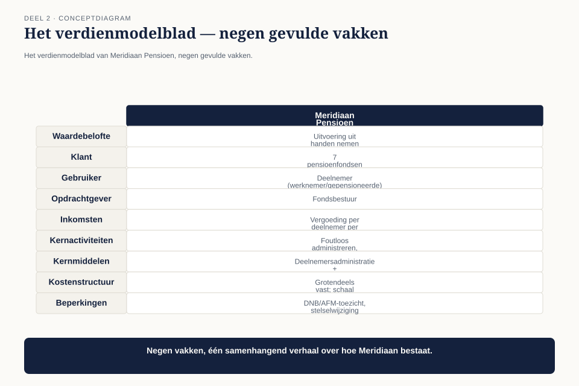

In deel 1 hebben we vastgesteld dat een architect wordt herkend aan wat hij weet en doet. Dit deel gaat over het eerste ding dat hij moet weten, en het is niet een technologie. Business Technology Strategy is de eerste kernpijler van de BTABoK, en de eerste competentie daarbinnen heet Business Fundamentals. Dat is geen toeval en geen beleefdheidsvolgorde.
11secties
±2udagdeel + huiswerk
6controlevragen
4figuren
Positionering. Deze cursus bereidt je voor op de Iasa-certificeringen en is uitdrukkelijk géén vervanging van het officiële examen- en cursusmateriaal van Iasa.
Niveau 1: ❶ Het beroep → ❷ Business Technology Strategy I (hier) → ❸ Business Technology Strategy II: waarde → ❹ Human Dynamics I: stakeholders → ❺ Human Dynamics II: invloed → ❻ Design I: requirements en scope → ❼ Design II: architectuurbeschrijving en besluitvorming → ❽ Quality Attributes → ❾ IT Environment → ❿ Examentraining CITA-F en capstone
01
Waar dit deel over gaat
⏱ 8 min
In deel 1 hebben we vastgesteld dat een architect wordt herkend aan wat hij weet en doet. Dit deel gaat over het eerste ding dat hij moet weten, en het is niet een technologie.
Business Technology Strategy is de eerste kernpijler van de BTABoK, en de eerste competentie daarbinnen heet Business Fundamentals. Dat is geen toeval en geen beleefdheidsvolgorde. Alles wat een architect verderop doet — prioriteren, afwegen, adviseren, weigeren — steunt op de vraag die hier wordt beantwoord: waar komt het geld vandaan en waar gaat het heen?
Aan het eind van dit deel kun je:
het verdienmodel van je eigen organisatie in vijf minuten uitleggen aan iemand die er niet werkt;
benoemen wie in jouw organisatie de klant is, wie de gebruiker en wie de opdrachtgever — en waarom dat drie verschillende partijen kunnen zijn;
de eenheid bepalen waarin jouw organisatie waarde meet, en die eenheid gebruiken om technologievoorstellen te prioriteren;
een sectoranalyse maken die verder gaat dan “er is veel concurrentie”;
van minstens drie kenmerken van het verdienmodel de architectuurgevolgen afleiden.
02
De opdracht die Claudette krijgt
⏱ 8 min
Na het assessmentgesprek geeft Bart Hoekstra haar een opdracht die ze eerst als een belediging opvat.
“Over drie weken heb je twintig minuten in het MT. Je legt uit hoe Meridiaan geld verdient. Geen slide over systemen. Als je dat kunt, geloof ik de rest ook.”
Claudette’s eerste versie duurt negen minuten en gaat over de polisadministratie, de uitkeringsstraat, het klantportaal en de koppelvlakken daartussen. Ze noemt drie keer het woord “keten”. Bart onderbreekt haar bij minuut zes.
Figuur 2-1 — Claudette's eerste opzet — een systeemlandschap — naast haar tweede opzet — een geldstroom. Zelfde organisatie, twee onverenigbare beelden
De correctie die hij geeft is de kern van dit deel:
“Je hebt me verteld hoe het werkt. Ik vroeg hoe het betaalt.”
Dit is observatie O2: Claudette kan niet uitleggen hoe Meridiaan geld verdient, welke markt het bedient of waar de vergunning knelt.
03
De vier vragen
⏱ 8 min
De BoK beschrijft Business Fundamentals uitgebreid, maar voor de praktijk laat het zich terugbrengen tot vier vragen die je van je eigen organisatie moet kunnen beantwoorden zonder iets op te zoeken.
Vraag
Wat je ermee kunt
1
Wie betaalt ons, en waarvoor precies?
je weet welke voorstellen inkomsten raken en welke niet
2
In welke eenheid meten we dat?
je kunt kosten en baten in dezelfde taal uitdrukken als de directie
3
Waar zit onze kostenstructuur?
je weet welke besparing merkbaar is en welke ruis
4
Wat mogen we niet, en van wie niet?
je weet welk voorstel bij voorbaat kansloos is
Vraag 2 is de belangrijkste en wordt het vaakst overgeslagen. Elke organisatie meet waarde in een eenheid: per transactie, per klant per maand, per behandeling, per geleverd uur, per deelnemer per jaar. Wie die eenheid niet kent, kan geen voorstel doen dat de ontvanger kan wegen. Dat is precies waarom Claudette’s verzoek om budget voor het koppelvlak strandde: “minder risico” is geen eenheid.
04
Het verdienmodel als werkvorm
⏱ 8 min
Om die vier vragen systematisch te beantwoorden gebruiken we in deze cursus het verdienmodelblad: één A3 met negen vakken, waarop je het verdienmodel van een organisatie in een uur met vier mensen kunt reconstrueren.
De opzet is niet nieuw — het idee van een businessmodel op één blad is breed gemeengoed en de BTABoK verwijst zelf naar bestaande canvases die het in zijn canvasbenadering heeft ingepast. Ons blad is een eigen Ductus-uitvoering, aangepast op één punt dat er voor architecten toe doet: het vak beperkingen, dat in de gangbare varianten ontbreekt en dat in gereguleerde sectoren juist de meeste architectuurbesluiten bepaalt.
De negen vakken:
Vak
Vraag
Waardebelofte
wat lost dit op, voor wie?
Klant
wie betaalt?
Gebruiker
wie gebruikt het? (kan een ander zijn)
Opdrachtgever
wie besluit tot afname? (kan een derde zijn)
Inkomsten
welke geldstromen, in welke eenheid?
Kernactiviteiten
wat moeten we zelf goed kunnen?
Kernmiddelen
wat hebben we nodig — mensen, data, vergunningen, systemen?
Kostenstructuur
waar gaat het geld heen; wat is vast, wat schaalt mee?
Beperkingen
wat mag niet, van wie, en wat gebeurt er als we het toch doen?
De drie vakken klant, gebruiker en opdrachtgever zijn in veel organisaties dezelfde partij. Als dat zo is, ben je in een eenvoudige wereld. Als het drie verschillende partijen zijn — zoals bij Meridiaan — verklaart dat het merendeel van de politieke wrijving in je werk.
Controlevraag
Uit Werkboek deel 2, Opdracht 2 — Je eigen verdienmodelblad
1Je eigen verdienmodelbladToon antwoord
Individueel, 30 minuten — dit resultaat gebruik je de rest van de cursus
Vul het verdienmodelblad in voor je eigen organisatie. Negen vakken:
Vak
Jouw invulling
Waardebelofte
Klant (wie betaalt)
Gebruiker (wie gebruikt)
Opdrachtgever (wie besluit tot afname)
Inkomsten en de eenheid daarvan
Kernactiviteiten
Kernmiddelen
Kostenstructuur (vast versus meeschalend)
Beperkingen (wat mag niet, van wie)
Twee regels.
Niets opzoeken. Wat je nu niet weet, laat je leeg. Lege vakken zijn de opbrengst van deze opdracht.
Bij “inkomsten” is een bedrag onvoldoende. Er moet een eenheid staan: per wat, per hoe vaak.
Afsluitend: markeer de vakken die je hebt moeten raden. Hoeveel zijn dat er?
Uitwerking
Geen modelantwoord mogelijk. Wat je uit je eigen blad moet aflezen:
Verwachte uitkomst. De meeste deelnemers vullen waardebelofte, klant en kernactiviteiten moeiteloos in. Ze stranden op drie vakken: de eenheid bij inkomsten, de verdeling vast versus meeschalend in de kostenstructuur, en het onderscheid tussen klant en opdrachtgever.
Dat patroon is inhoudelijk betekenisvol. Het zijn precies de drie vakken waarmee je een voorstel weegbaar maakt — en het zijn precies de vakken die niemand aan een architect vertelt, omdat men aanneemt dat hij ze niet nodig heeft.
Wat je met de lege vakken doet. Ze zijn geen tekortkoming maar een agenda. Elk leeg vak is één gesprek van twintig minuten met één persoon: de controller, je leidinggevende, een accountmanager, de compliance officer. Plan die gesprekken. Deelnemers die dat na deel 2 daadwerkelijk doen, merken in deel 3 en deel 15 het verschil.
Als je meer dan vier vakken hebt moeten raden: dat is normaal en het is geen persoonlijk falen. Het is wel de directe verklaring voor observatie O3, die in het volgende deel aan de beurt is.
05
Meridiaan uitgewerkt
⏱ 8 min
Zo ziet het blad eruit dat Claudette in haar tweede poging gebruikt.

Figuur 2-2 — het verdienmodelblad van Meridiaan Pensioen, negen gevulde vakken
Waardebelofte. Meridiaan neemt pensioenfondsen het volledige uitvoeringswerk uit handen: administratie, communicatie, uitkeringsbetaling, verantwoording aan toezichthouders. Het fondsbestuur blijft verantwoordelijk maar hoeft geen eigen uitvoeringsapparaat te houden.
Klant. Pensioenfondsen — zeven op dit moment, waarvan de twee grootste samen ruim zestig procent van de omzet vertegenwoordigen. Dat is een concentratierisico van formaat, en het verklaart waarom een MT-vergadering ontspoort zodra het woord “Zuiderzee” valt.
Gebruiker. De deelnemer: de werknemer of gepensioneerde die pensioen opbouwt of ontvangt. Die betaalt Meridiaan niets, kiest Meridiaan niet en kan er niet weg. Hij is wel degene die belt als er iets misgaat, en degene wiens ervaring in de klanttevredenheidscijfers belandt waarop het fondsbestuur Meridiaan afrekent.
Opdrachtgever. Het fondsbestuur, dat besluit over verlenging van het uitvoeringscontract. Contracten lopen doorgaans vijf tot zeven jaar.
Inkomsten. Een vergoeding per deelnemer per jaar, vastgelegd in het uitvoeringscontract, plus meerwerk voor projecten die buiten de basisdienstverlening vallen. Uitvoeringskosten per deelnemer per jaar is de eenheid waarin deze hele sector denkt — fondsen publiceren het, vergelijken het, en worden erop aangesproken door hun verantwoordingsorgaan.
Kernactiviteiten. Foutloos administreren, tijdig uitkeren, aantoonbaar voldoen aan wet- en regelgeving, en begrijpelijk communiceren met deelnemers die het onderwerp liever vermijden.
Kernmiddelen. De deelnemersadministratie en de historische gegevens daarin — decennia aan opbouwgegevens die niet reproduceerbaar zijn. Verder: mensen met pensioenkennis, en de relatie met de toezichthouder.
Kostenstructuur. Grotendeels vast: personeel, systemen, beheer. De marginale kosten van één deelnemer extra zijn bijna nul. Daarom is schaal het hele spel: een fonds erbij verlaagt de kosten per deelnemer voor iedereen, een fonds eraf verhoogt ze voor iedereen.
Beperkingen. Toezicht door DNB en AFM, de wettelijke eisen aan de pensioenadministratie, de transitie naar het nieuwe stelsel met een wettelijke einddatum, en het gegeven dat gegevens over pensioenopbouw decennia lang reproduceerbaar en verklaarbaar moeten blijven.
Controlevragen
Uit Werkboek deel 2, Opdracht 3 — Klant, gebruiker, opdrachtgever
1Klant, gebruiker, opdrachtgeverToon antwoord
In tweetallen, 15 minuten
Voor elk van de onderstaande organisaties: wie is de klant, wie de gebruiker en wie de opdrachtgever? Vallen ze samen of niet, en welk conflict brengt dat mee?
Een pensioenuitvoerder (Meridiaan)
Een gemeente met een digitaal loket voor vergunningaanvragen
Een leverancier van software voor huisartsenpraktijken
Een ziekenhuis met een patiëntenportaal
Een webwinkel voor consumenten
Uitwerking
Organisatie
Klant
Gebruiker
Opdrachtgever
Conflict
Pensioenuitvoerder
pensioenfonds
deelnemer
fondsbestuur
de gebruiker betaalt niet, kiest niet en kan niet weg; zijn belang wordt alleen behartigd voor zover het fondsbestuur dat doet. Investeringen in deelnemerservaring moeten via een derde worden verantwoord
Gemeentelijk vergunningloket
de gemeenschap via belasting
de aanvrager
het college of de raad
de gebruiker is tegelijk financier maar via een compleet ander kanaal; efficiencywinst voor de organisatie kan lastenverzwaring voor de aanvrager betekenen zonder dat iemand dat als kost boekt
Huisartsensoftware
de praktijk (of een koepel)
de huisarts en de assistente; indirect de patiënt
praktijkhouder of inkoopcombinatie
de gebruiker heeft de meeste kennis van wat werkt maar de minste invloed op de aanschaf; verkoop draait op functielijsten, gebruik op werkbaarheid
Patiëntenportaal
het ziekenhuis
de patiënt en de zorgverlener
raad van bestuur of ICT-stuurgroep
twee gebruikersgroepen met tegengestelde belangen: wat de patiënt aan inzage wil, is voor de zorgverlener extra vastlegwerk
Webwinkel
consument
consument
consument
alle drie dezelfde persoon — de enige situatie waarin gebruikersonderzoek rechtstreeks een omzetargument is
De les. De webwinkel is de uitzondering, niet de norm. In vier van de vijf gevallen heeft de persoon die het systeem gebruikt geen stem in het besluit erover. Dat is geen organisatorisch ongemak dat je kunt wegvergaderen; het is een structureel kenmerk dat je in je ontwerp moet verdisconteren — bijvoorbeeld door gebruikssignalen zo vast te leggen dat ze in de taal van de opdrachtgever kunnen worden gerapporteerd.
Wie dit onderscheid niet maakt, loopt vast op de klassieke vraag: waarom kiest de organisatie steeds voor iets dat de gebruikers niet willen? Het antwoord is meestal niet domheid maar de tabel hierboven.
Uit Werkboek deel 2, Opdracht 5 — Van kenmerk naar consequentie
2Van kenmerk naar consequentieToon antwoord
In tweetallen, 20 minuten
Neem drie kenmerken uit het verdienmodelblad van Meridiaan (reader 2.5). Leid van elk de architectuurconsequentie af via de ketting van vier schakels:
Kenmerk: vergoeding per deelnemer per jaar
Economische logica: handwerk kost geld maar levert geen extra inkomsten op
Ontwerpeis: elk proces dat een medewerker aanraakt, moet een gemeten volume hebben
Toetsbaar: voor elk handmatig proces is bekend hoeveel keer per maand het voorkomt
Doe dit voor drie andere kenmerken. Let op de laatste schakel: de consequentie moet aantoonbaar waar of onwaar kunnen zijn.
Uitwerking
Drie uitgewerkte voorbeelden.
Kenmerk: vaste kosten, bijna nul marginale kosten per deelnemer
Economische logica: winst zit in volume over dezelfde vaste basis; alles wat per fonds verschilt, vermenigvuldigt de vaste basis
Ontwerpeis: fondsspecifiek gedrag wordt geparametriseerd, niet geprogrammeerd
Toetsbaar: een nieuw fonds aansluiten vergt nul wijzigingen in broncode
Economische logica: de historische administratie is een kernmiddel dat niet te reproduceren is; verlies ervan is existentieel, niet duur
Ontwerpeis: mutaties worden vastgelegd als gebeurtenis met tijdstip, bron en aanleiding; overschrijven is niet toegestaan
Toetsbaar: voor elke deelnemer is de opbouwstand op elke willekeurige datum in het verleden te reconstrueren, inclusief de reden van elke wijziging
Kenmerk: twee klanten zijn zestig procent van de omzet
Economische logica: het vertrek van één klant maakt de vaste kostenbasis onhoudbaar; hun eisen zijn daarmee feitelijk bindend
Ontwerpeis: wat voor de grote twee wordt gebouwd, wordt gebouwd als generieke functie met configuratie — anders wordt hun maatwerk de facto het product
Toetsbaar: er bestaat geen functionaliteit die exclusief voor één fonds beschikbaar is zonder expliciet besluit met einddatum
Waar het misgaat. De meest voorkomende fout is de derde schakel overslaan: van kenmerk direct naar toetsbare consequentie springen. Dan krijg je een eis zonder redenering, en die overleeft het eerste tegenargument niet. De economische logica in het midden is wat het gesprek wint, niet de eis zelf.
06
Wat er gebeurt als je dit blad hebt
⏱ 8 min
Kijk nu nog eens naar Claudette’s vastgelopen verzoek uit deel 1: budget voor het opruimen van een koppelvlak dat productieverstoringen veroorzaakt, afgewezen op de vraag wat het oplevert.
Met het blad ernaast is dat verzoek in vijf minuten te herschrijven. De verstoring raakt de uitkeringsstraat. Uitkeringsfouten leiden tot herstelwerk, dat is handwerk, en handwerk is de grootste variabele kostenpost in een verder vaste kostenstructuur. Herstelwerk drukt dus rechtstreeks op de uitvoeringskosten per deelnemer — precies het getal waarop het fondsbestuur Meridiaan afrekent bij contractverlenging. En bij het eerstvolgende toezichtonderzoek is een bekende, niet-verholpen fout in de uitkeringsketen geen technische kwestie maar een beheersingskwestie.
Dat is hetzelfde voorstel. Het verschil is dat het nu in de eenheid staat waarin de ontvanger denkt.
Let op wat hier níet gebeurt
Claudette verzint geen argumenten om haar zin te krijgen. Ze vertaalt een bestaand gevolg naar de taal waarin het gewogen kan worden. Het verschil tussen die twee is de derde rode draad uit deel 1: waarde is een bewering die je moet kunnen dragen. Als het herstelwerk in werkelijkheid twee uur per maand kost, dan is dat het antwoord — en dan is het voorstel terecht afgewezen.
Controlevraag
Uit Werkboek deel 2, Opdracht 1 — Wat is hier fout aan?
1Wat is hier fout aan?Toon antwoord
Individueel, 10 minuten
Hieronder staan vijf zinnen uit echte architectuurdocumenten. Elke zin bevat dezelfde soort fout als Claudette’s eerste MT-poging. Benoem per zin (a) welke informatie ontbreekt en (b) hoe je hem zou herschrijven.
“Migratie naar het nieuwe integratieplatform vermindert de technische schuld aanzienlijk.”
“Door API-first te werken worden we wendbaarder.”
“Het huidige landschap is complex en moeilijk onderhoudbaar.”
“Deze investering is noodzakelijk om toekomstvast te blijven.”
“Het risico op verstoringen neemt af.”
Uitwerking
Alle vijf de zinnen hebben dezelfde structuur: een verandering wordt beloofd zonder eenheid, zonder nulmeting en zonder ontvanger. De lezer kan niet vaststellen of de bewering waar is, en dus ook niet of ze de moeite waard is.
#
Wat ontbreekt
Herschreven
1
“aanzienlijk” is geen maat; technische schuld is bovendien geen kostenpost die iemand in de begroting terugvindt
“Vier van de elf koppelvlakken vergen nu handmatig herstel bij een schemawijziging. Dat kost gemiddeld twee dagen per wijziging, bij circa acht wijzigingen per jaar. Na migratie vervalt dat handwerk voor drie van de vier.”
2
wendbaarheid is een eigenschap, geen uitkomst; wendbaar in welk opzicht, voor wie merkbaar?
“Een nieuw fonds aansluiten kost nu gemiddeld vier maanden, waarvan zes weken koppelvlakbouw. Doel is die zes weken terug te brengen tot één.”
3
een toestandsbeschrijving zonder gevolg; niemand kan hier een besluit op nemen
“Zeventien van de drieëntwintig applicaties hebben één persoon die ze kan wijzigen. Bij ziekte of vertrek staat het werk stil; dat is in het afgelopen jaar drie keer gebeurd.”
4
“toekomstvast” betekent niets toetsbaars; noodzakelijk volgens wie?
“Het huidige platform krijgt na oktober volgend jaar geen beveiligingsupdates meer. Daarmee vervalt onze verklaring aan de toezichthouder over het beheersingsniveau.”
5
geen basiswaarde, geen doelwaarde, geen wie het merkt
“In de afgelopen twaalf maanden zijn er negen verstoringen geweest in de uitkeringsketen, met gemiddeld elf uur herstelwerk per verstoring. Zeven ervan zijn te herleiden tot dit koppelvlak.”
Het patroon. Vergelijk de linker- en rechterkolom: rechts staat vrijwel geen techniek, en toch is het technischer in de zin die telt — het is controleerbaar. De rechterkolom vergt bovendien werk dat de linker niet vergt: iemand moest die getallen ophalen. Dat is het echte verschil tussen de twee kolommen, en de reden dat de linker zo vaak wordt geschreven.
Waarschuwing bij het herschrijven: verzin de getallen niet. Als je ze niet hebt, is de correcte formulering “ik weet dit niet en het kost me twee dagen om het uit te zoeken” — dat is een sterker document dan een verzonnen percentage. In deel 3 werken we uit hoe je waardeert met onvolledige cijfers.
07
Industrieanalyse
⏱ 8 min
De tweede competentie in deze pijler kijkt naar buiten. Waar het verdienmodel beschrijft hoe jouw organisatie werkt, beschrijft de industrieanalyse waarom dat model onder druk staat.
Voor architecten is dit geen strategie-oefening maar een houdbaarheidstoets: de systemen die je nu ontwerpt, moeten werken in de sector zoals die er over vijf jaar uitziet.
Figuur 2-3 — krachtenveld rond Meridiaan — vier krachten met richting en tijdshorizon
Vier krachten rond Meridiaan, elk met een architectuurgevolg:
Kracht
Wat er gebeurt
Gevolg voor architectuur
Consolidatie
het aantal pensioenfondsen daalt al jaren; fondsen fuseren of sluiten aan bij grotere uitvoerders
je moet fondsen kunnen op- en afvoeren zonder maatwerk — meerdere opdrachtgevers in één administratie
Stelselwijziging
de overgang naar het nieuwe pensioenstelsel, met een wettelijke einddatum
eenmalige, onomkeerbare gegevensconversie met volledige verantwoording achteraf
Toezichtsdruk
toenemende eisen aan aantoonbare beheersing en aan communicatie richting deelnemers
traceerbaarheid is geen kwaliteitsattribuut maar een licentievoorwaarde
Leveranciersconcentratie
een klein aantal leveranciers bedient vrijwel de hele Nederlandse markt
afhankelijkheid is een strategisch risico, geen inkoopkwestie
Doe deze analyse niet op gevoel. De bronnen liggen open: jaarverslagen van je klanten, publicaties van de toezichthouder, brancheverenigingen, en het verantwoordingsorgaan van je grootste opdrachtgever. Een middag lezen levert meer op dan een jaar meevergaderen.
Controlevraag
Uit Werkboek deel 2, Opdracht 4 — Industrieanalyse van je eigen sector
1Industrieanalyse van je eigen sectorToon antwoord
In groepen van drie tot vier, 25 minuten
Breng vier krachten in kaart die het verdienmodel van jouw organisatie de komende vijf jaar onder druk zetten. Per kracht:
Kracht
Wat er gebeurt
Termijn
Architectuurgevolg
1
2
3
4
Eis. Elk architectuurgevolg moet een ontwerpeis zijn, geen zorg. “We moeten wendbaarder worden” is een zorg. “We moeten een klant kunnen aansluiten zonder codewijziging” is een ontwerpeis.
Vervolgvraag. Welke van je vier krachten kende je al vóór deze opdracht, en waar heb je dat vandaan? Als het antwoord “van horen zeggen” is, weet je waar je huiswerk ligt.
Uitwerking
Geen modelantwoord; wel beoordelingscriteria.
Criterium
Voldoet als
Extern
de kracht komt van buiten de organisatie; “onze legacy” is geen sectorkracht
Gedateerd
er staat een termijn bij, en die is onderbouwd (wetgeving, contractafloop, waargenomen trend)
Ontwerpeis, geen zorg
het gevolg is als eis geformuleerd en toetsbaar
Bron aanwijsbaar
je kunt zeggen waar je het vandaan hebt
Veelgemaakte fout. “AI” wordt in vrijwel elke groep als kracht genoemd, meestal zonder mechanisme. Vraag door: via welke route raakt het jouw verdienmodel? Verlaagt het de kosten van een activiteit die bij jou vast is? Verlaagt het de drempel voor nieuwe toetreders? Verandert het wat je klant van je verwacht? Zonder zo’n route is het geen analyse maar een sfeerbeeld — en dan komt er ook geen ontwerpeis uit.
Over de vervolgvraag. Deelnemers die hun krachten uit vergaderingen halen in plaats van uit bronnen, hebben stelselmatig het beeld van hun eigen management en niet dat van de sector. Dat is een verklaarbaar maar riskant vertrekpunt: je kunt je organisatie dan alleen adviseren binnen wat zij al ziet.
08
Van verdienmodel naar architectuurgevolg
⏱ 8 min
Dit is de vaardigheid waar het deel op uitloopt en waar opdracht 5 in het werkboek over gaat. Elk kenmerk van het verdienmodel legt beperkingen op aan het ontwerp. Niet als vage richtlijn — als afleidbare consequentie.
Figuur 2-4 — ketting van vier schakels — verdienmodelkenmerk → economische logica → ontwerpeis → toetsbare consequentie
Kenmerk van het model
Wat daaruit volgt
Vaste kosten, bijna nul marginale kosten per deelnemer
standaardisatie verslaat maatwerk altijd; elk fondsspecifiek proces is een structurele kostenpost die nooit meer weggaat
Vergoeding per deelnemer, niet per handeling
automatiseringsgraad is de winstknop; elke handmatige stap eet direct de marge
Klant, gebruiker en opdrachtgever zijn drie partijen
je hebt drie verschillende soorten eisen die kunnen botsen, en de gebruiker heeft geen stem in de besluitvorming — dat is een ontwerpprobleem, niet alleen een politiek probleem
Gegevens moeten decennia verklaarbaar blijven
onveranderlijke vastlegging en herleidbaarheid zijn geen extra’s; “we hebben het overschreven” is geen aanvaardbaar antwoord
Contracten van vijf tot zeven jaar
je afschrijvingshorizon is niet technisch bepaald maar contractueel; een systeem dat pas na acht jaar loont, wordt nooit terugverdiend bij één klant
Twee klanten zijn zestig procent van de omzet
wat die twee vragen wordt vanzelf je productstrategie, of je dat nu verstandig vindt of niet
Deze afleidingen zijn niet ingewikkeld. Ze zijn zeldzaam. De meeste architectuurdocumenten beginnen bij de techniek en zoeken achteraf een businessreden; de omgekeerde volgorde is wat de BoK van je vraagt.
09
De valkuil: bedrijfskundetoerisme
⏱ 8 min
Er is een tegenreactie die je moet kennen, omdat hij in elke groep opkomt. Als architecten businessmodellen gaan tekenen, gaan ze soms strategie zítten doen — SWOT’s, marktverkenningen, adviezen over acquisities. Dat is niet het werk.
De BoK trekt de grens bij het beroepsprincipe uit deel 1: er is een schaalniveau waarboven een architect zijn proactieve werk niet meer kan vasthouden en manager wordt. Voor deze pijler betekent dat:
Wel jouw werk: het verdienmodel kennen, de eenheid van waarde gebruiken, gevolgen voor het ontwerp afleiden, en signaleren wanneer een technisch besluit een verdienmodelbesluit is geworden.
Niet jouw werk: bepalen welke markten de organisatie bedient, welke fondsen ze wil binnenhalen, of het contract met Zuiderzee verlengd moet worden.
De scheidslijn is bruikbaar in het echt: je levert de feiten en de opties, het besluit ligt bij een ander. Die zin komt in deze cursus nog vaak terug — in deel 10 verdedig je hem, en in deel 27 onderzoeken we wat je moet doen als het besluit dat een ander neemt aantoonbaar fout is.
10
Observatie O2 gesloten
⏱ 8 min
Claudette kan niet uitleggen hoe Meridiaan geld verdient, welke markt het bedient of waar de vergunning knelt.
Haar tweede poging in het MT duurt zeventien minuten. Ze begint bij de deelnemer, gaat via het fondsbestuur naar het contract, en komt bij de vergoeding per deelnemer per jaar. Dan laat ze zien welke drie kostenposten dat getal bepalen, en waar in de keten die kosten ontstaan. Pas in de laatste vier minuten komt er een systeem in beeld — als antwoord op de vraag waar het herstelwerk vandaan komt.
De financieel directeur stelt de eerste vraag die iemand haar in vier maanden heeft gesteld: “Hoeveel van dat herstelwerk zit in dat ene koppelvlak?”
Ze weet het antwoord niet. Dat is niet erg — de vraag zelf is de doorbraak. Iemand vraagt haar iets omdat hij denkt dat zij het weet.
Wat er is veranderd, is niet Claudette’s kennis van de techniek. Ze weet niets nieuws over de uitkeringsstraat. Ze heeft één ding geleerd: de eenheid waarin haar organisatie waarde meet. Alles wat ze vanaf nu voorstelt, kan ze in die eenheid uitdrukken, en daarmee wordt het weegbaar.
In deel 3 gaat het over wat er gebeurt als je die eenheid hebt maar de getallen niet: hoe waardeer je iets dat je niet precies kunt meten? Dat wordt observatie O3.
Controlevraag
Uit Werkboek deel 2, Opdracht 6 — Herschrijf je eigen voorstel
1Herschrijf je eigen voorstelToon antwoord
Individueel, 20 minuten
Neem een voorstel dat je in de afgelopen twee jaar hebt gedaan en dat het niet heeft gehaald, of dat alleen met moeite is doorgekomen.
a. Schrijf in maximaal drie zinnen op hoe je het destijds hebt gebracht.
b. Herschrijf het in de eenheid van waarde uit opdracht 2. Maximaal honderd woorden. De eerste zin moet de eenheid bevatten.
c. Beantwoord eerlijk: wordt het voorstel hierdoor sterker, of blijkt nu dat het zwak was?
Antwoord c is de eigenlijke opdracht. Zie de uitwerking.
Uitwerking
Onderdeel c is waar het om gaat, en het antwoord valt in de praktijk in drie categorieën.
Categorie 1: het voorstel wordt sterker (ongeveer de helft). Het gevolg was er altijd al, maar het was niet uitgedrukt in de eenheid van de ontvanger. Dit zijn de voorstellen die destijds terecht niet zijn begrepen. Herschrijf en dien opnieuw in — serieus. Meerdere deelnemers hebben op basis van deze opdracht een oud voorstel alsnog binnengehaald.
Categorie 2: er blijkt een gat te zitten (ongeveer een derde). Je kunt de eerste zin niet schrijven omdat je de nulmeting niet hebt. Dat is geen mislukking maar een bevinding: het voorstel was niet zwak, het was ongemeten. De vervolgactie is niet herschrijven maar meten. Deel 3 gaat over wat je doet als meten niet kan.
Categorie 3: het voorstel was zwak (ongeveer een vijfde). In de eenheid van waarde uitgedrukt blijkt het gevolg klein. Het herstelwerk was twee uur per maand. De verstoring raakte niemand die het merkte.
Die laatste categorie is de moeilijkste en de waardevolste. De verleiding is om het voorstel dan alsnog met kwalitatieve argumenten te verdedigen — “maar het is gewoon niet netjes zo”. Doe dat niet. Een architect die zijn eigen zwakke voorstel laat vallen op grond van zijn eigen analyse, bouwt precies het gezag op dat hij nodig heeft voor het volgende voorstel dat wél sterk is.
Dit is de rode draad van de cursus in de meest ongemakkelijke vorm: waarde is een bewering die je moet kunnen dragen — óók als het je eigen bewering is en de uitkomst je niet bevalt.
11
Kernbegrippen
⏱ 8 min
Begrip
Betekenis in deze cursus
Business Fundamentals
de eerste competentie van de pijler Business Technology Strategy: begrijpen hoe je organisatie werkt en waarvan zij bestaat
Verdienmodelblad
Ductus-werkvorm met negen vakken om een verdienmodel te reconstrueren; afgeleid van de gangbare businessmodelcanvassen, uitgebreid met het vak beperkingen
Eenheid van waarde
de maat waarin een organisatie kosten en baten uitdrukt (per deelnemer per jaar, per transactie, per behandeling)
Klant / gebruiker / opdrachtgever
drie rollen die kunnen samenvallen maar dat vaak niet doen; het onderscheid verklaart botsende eisen
Industrieanalyse
houdbaarheidstoets: werkt dit ontwerp nog in de sector zoals die er over vijf jaar uitziet?
Verder naar deel 3
Deel 3 — Business Technology Strategy II: waarde — bouwt voort op wat hier is behandeld.